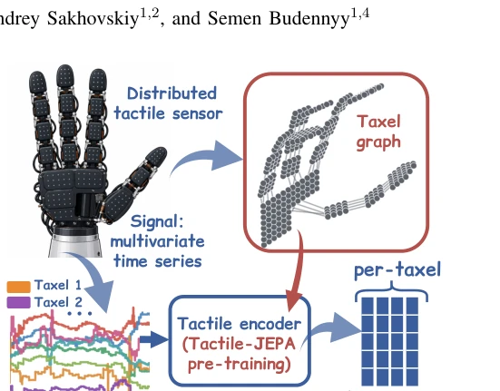
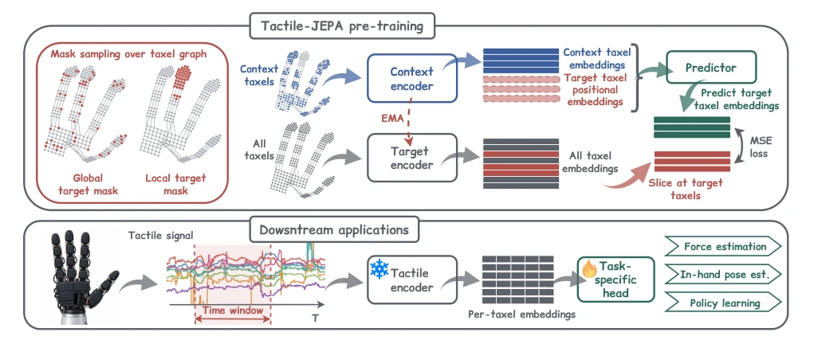

这篇论文给分布式触觉传感器来了个“拓扑觉醒”。虽然 JEPA 在视觉领域已经卷成麻花，但作者没急着套娃，而是盯着电子皮肤（e-skin）那稀疏又杂乱的 taxel 布局较劲。以前大家要么把触觉信号硬凑成图像骗 MAE [14]，要么就端到端瞎练，结果就是编码器对“手长啥样”没概念，遇到遮挡就抓瞎。Tactile-JEPA 搞了个基于图结构的掩码采样，把局部接触细节和全局接触状态都塞进 embedding 里，算是给触觉模态补上了缺失的“空间感”。虽然没搞多模态大模型那么花哨，但在力估计和姿态预测上确实把 SOTA 按在地上摩擦，尤其是那个 20.8% 的朝向误差降低，看着挺爽。不过，这方法离了传感器拓扑图就歇菜，要是换个新皮肤还得重新建图，算不算另一种“过拟合”？反正代码开源了，搬砖的赶紧去试试，毕竟触觉编码器的预训练质量直接决定了机器人能不能“摸得准”。
This paper brings a "topological awakening" to distributed tactile sensors. Although JEPA has become highly competitive in the visual domain, the authors did not simply apply it directly, but instead focused on the sparse and irregular taxel layout of electronic skin (e-skin). Previously, researchers either forced tactile signals into images to adapt MAE [14], or trained end-to-end blindly, resulting in encoders having no concept of "what the hand looks like" and failing when encountering occlusion. Tactile-JEPA employs graph-structure-based masked sampling, embedding both local contact details and global contact states, effectively filling the missing "spatial sense" for the tactile modality. Although not as flashy as multimodal large models, it significantly outperforms the SOTA in force estimation and pose prediction, especially the 20.8% reduction in orientation error, which is quite impressive. However, this method fails without the sensor topology graph; if changing to a new skin, the graph must be rebuilt, counting as another form of "overfitting"? Anyway, the code is open-sourced, practitioners should try it quickly, after all, the pre-training quality of the tactile encoder directly determines whether the robot can "touch accurately".
Robots want to perform fine tasks, relying only on eyes is insufficient, must rely on hand touch. But existing tactile encoders are mostly trained from scratch, or copy visual SSL methods [24]. The problem is that sensor nodes (taxels) of distributed electronic skin (e-skin) are sparsely and irregularly distributed, unlike cameras which have neat pixel grids. Directly applying MAE [26] or DINO [27] to reshape signals into images completely ignores the connection relationships between sensors [14]. Like T-DEX [29] although using BYOL, it just pads into a graph, not utilizing topology. Some methods although build graphs [39, 40], need labels, cannot self-supervised pre-train. This leads to the tactile modality becoming a bottleneck in VLA models; once vision is occluded, the robot is confused. The author wants to solve this: how to learn tactile representations that understand both local and global without relying on labels, using the sensor's own layout information. Existing methods either rely on simulated geometric information [41], or can only handle specific sensors, lacking universality.

Fig. 1. Tactile-JEPA pre-trains an encoder on signals from distributed tactile sensors in a self-supervised manner, accounting for sensor topology via the taxel graph and producing topology-aware per-taxel embeddings.
The overall process is divided into two steps: self-supervised pre-training and downstream fine-tuning. During pre-training, input is multi-variable tactile signals within a time window, each taxel's signal is projected into an embedding. The core innovation is the Taxel Connectivity Graph, which defines adjacency relationships between nodes, requiring no coordinates, relying only on known layout. Masked sampling is key, divided into local (connected subgraph, capturing local contact) and global (random scatter, capturing overall state) two types, mixed sampling. Context Encoder processes visible parts, Target Encoder processes all (EMA update), Predictor predicts Target's Embedding based on Context. Loss is MSE, only update Context Encoder. Downstream tasks freeze Encoder, add Head fine-tune. This design lets the model focus on both local details (e.g., force magnitude) and global state (e.g., grasp pose), more robust than simply reconstructing signals. Input representation through affine projection and layer normalization, ensuring each taxel's window signal becomes a semantic unit. Encoder is Transformer, calculates bidirectional attention. Predictor receives context and positional encoding, outputs prediction. EMA mechanism ensures target stability, prevents collapse.

Fig. 2. Overview of Tactile-JEPA. Top: self-supervised pre-training. Target masks are sampled over the taxel graph at local and global scales (left), so the encoder learns topology-aware contact patterns at both extents. The predictor infers target embeddings from context embeddings, matching the EMA target encoder outputs via MSE loss (right). Bottom: downstream applications. The target encoder from the top is frozen and reused as the tactile encoder, mapping a windowed tactile signal to per-taxel embeddings, on which a task-specific head is trained.
Used three datasets: Sparsh-skin (magnetic), Tactile socks (piezoresistive), DECO-50 (piezoresistive). Tasks include force estimation, pose, classification, policy. Baselines include BYOL [29], MAE [14], DINO [14]. Results Tactile-JEPA in force estimation error drops 6.3%, pose drops 20.8%. Ablation experiments show mixed mask (2L+2G) best, pure local or pure global not as good as mixed. Graph structure sampling better than I-JEPA's block sampling. In DECO-50 policy learning, although MAE slightly better, Tactile-JEPA more stable, DINO will collapse. Computational efficiency also 65-75% faster than DINO. On Sparsh-skin, object classification accuracy also highest. Proves topology-aware representation's generalization ability. Additionally, on Tactile socks action classification accuracy improved 1.28%, proves cross-modal applicability.